How to use this guide: take it on a walk! The big words on each page are for young naturalists. The Grown-up notes underneath have the identifying details, safety notes and ecology.
The woods in this guide run along Fred Creek in Tulsa — about 17 acres of creek-bottom forest. Most of the plant photos were taken right there in the fall of 2026.
🌳 Keeper Trees
Good native trees. These stay — we walk around them, not through them.
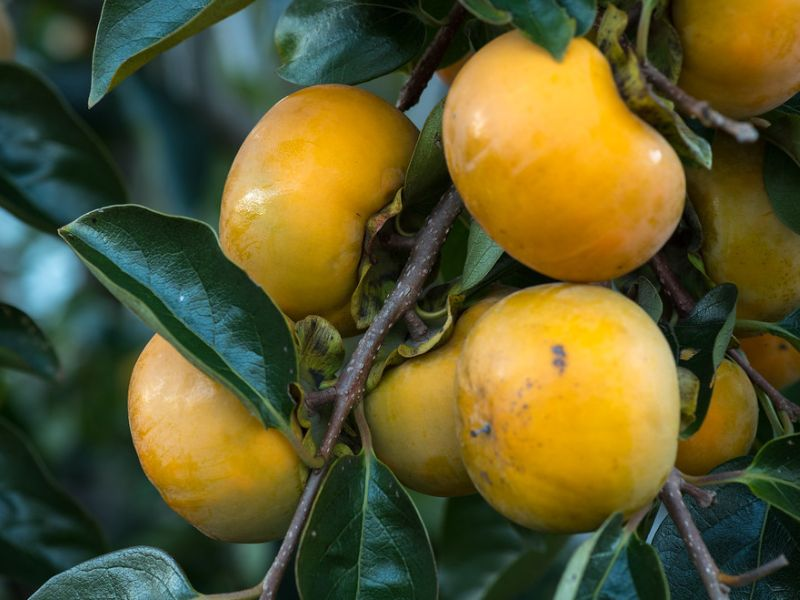
Keeper
American Persimmon
Diospyros virginiana
Little orange fruits on a tree with alligator bark. Wait until the fruit is squishy-soft — then it's sweet!
🍂 Fall: look for fallen fruit on the ground under the tree.
Grown-up notes
Bark is dark and broken into chunky square blocks — "alligator hide." Fruit is only 1–2 inches (much smaller than grocery-store persimmons) and mouth-puckering until completely soft. One of the best wildlife food trees in these woods: the raccoon sign found on the trail (see Animal Signs) was packed with persimmon seeds from a tree nearby.
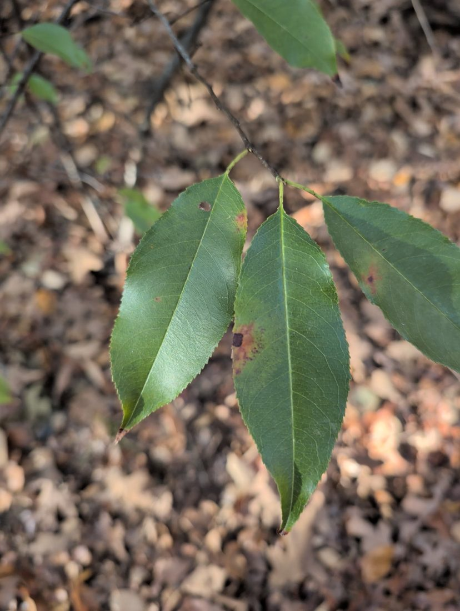
Keeper
Black Cherry
Prunus serotina
Shiny leaves with tiny teeth, like a little saw. This tree holds onto its green leaves for a long, long time.
🍂 Fall: still deep green in mid-November, when most leaves have turned.
Grown-up notes
Glossy, lance-shaped leaves with fine teeth and long pointed tips. A top-tier wildlife tree — birds and mammals eat the small black cherries — and a valuable native hardwood. Photo taken in these woods, November 2026.
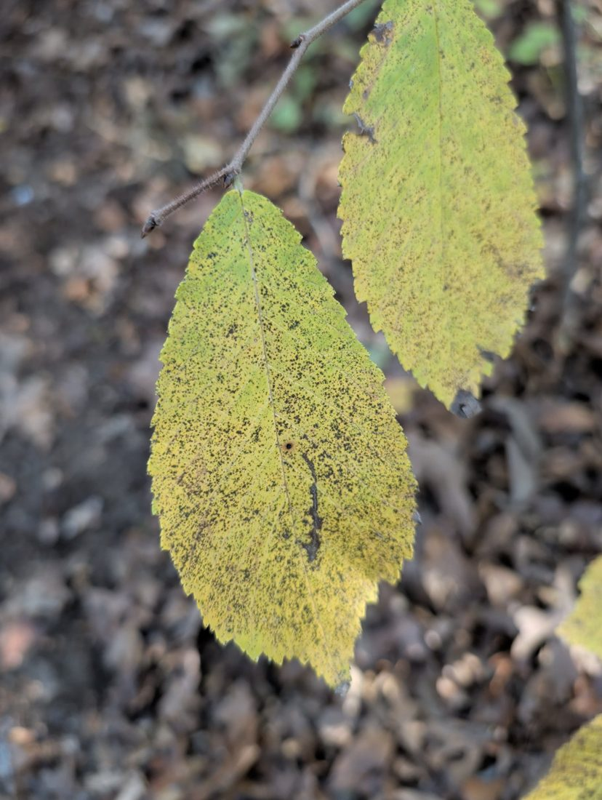
Keeper
Slippery Elm
Ulmus rubra
Rub a leaf between your fingers. Sandpaper! Rough on top and underneath.
🍂 Fall: leaves turn a plain, quiet yellow.
Grown-up notes
Big oval leaf, doubly serrated edge, lopsided base, strong parallel veins, fuzzy twig. The field check: slippery elm feels rough on both sides — American elm is much smoother underneath (confirmed by hand in these woods). Oddly, the "slippery" in the name is the inner bark, which makes a slick gel — not the leaves. Photo taken in these woods, November 2026.
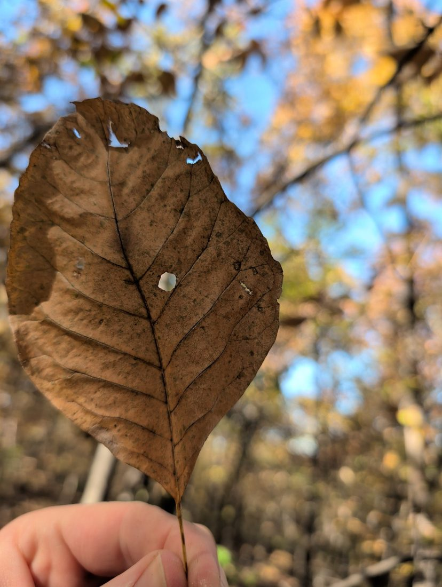
Keeper
Black Gum
Nyssa sylvatica
The first tree to turn red in the fall — like a stop sign in the woods!
🍂 Fall: brilliant scarlet, earlier than almost everything else.
Grown-up notes
Leaves have smooth (untoothed) edges, are widest above the middle, and cluster in tufts at the twig tips. A slow-growing creek-bottom specialist — a mid-sized black gum has been growing for many years — with top-tier fall colour and good wildlife fruit. When a trail had to choose between a young black gum and a young elm here, the black gum stayed: elms regrow fast and are everywhere in this corridor; black gum is the scarcer tree. Photo: one of its fallen leaves, November 2026.
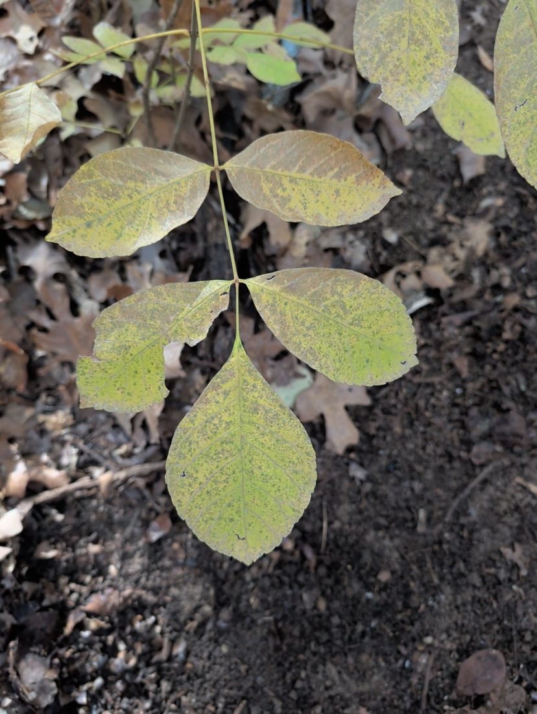
Keeper
Green Ash
Fraxinus pennsylvanica
One stem with lots of little leaves — like a green feather!
🍂 Fall: the whole feather turns yellow.
Grown-up notes
A pinnately compound leaf: five leaflets on one stalk, the end leaflet biggest and widest above its middle. Branches grow opposite each other — ash is one of the few opposite-branched trees. Caveat: the emerald ash borer is established in Oklahoma and green ash is its favourite food, so any ash is a borrowed-time tree. Enjoy it, but don't plan a trail around its shade. Photo taken in these woods, November 2026.
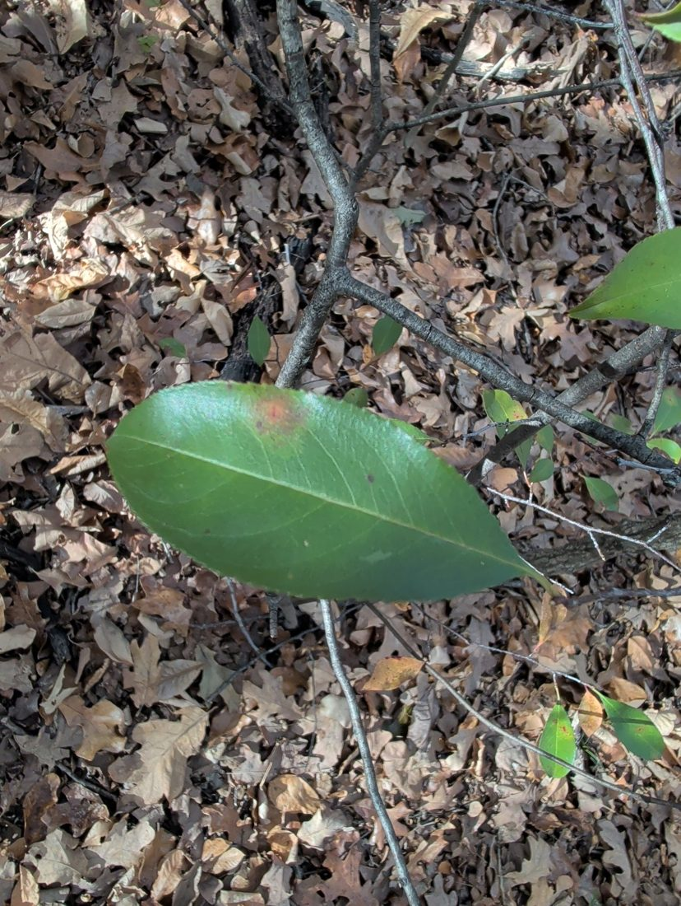
Yard guest
Carolina Cherry Laurel
Prunus caroliniana
A shiny leaf that stays green all winter long — even when the other trees are bare and sleeping.
🍂 Fall & winter: still glossy green. That's the giveaway.
Grown-up notes
Not a deep-woods native but a yard escape: cherry laurel is planted widely as a screening shrub, birds eat the black fruit, and seeds land in woods like these. Thick, leathery, evergreen leaves separate it from its look-alike, black cherry — if it's still wearing green leaves in January, it's the laurel. A fine screen plant, but not a keeper priority; if one stands in the trail tread, cutting it costs little. Photo taken in these woods, November 2026.
🧤 Invasive Plants — Pull It!
These plants pushed in from gardens and crowd out the native woods. Grown-ups pull or snip these on sight. Kids can help spot them!
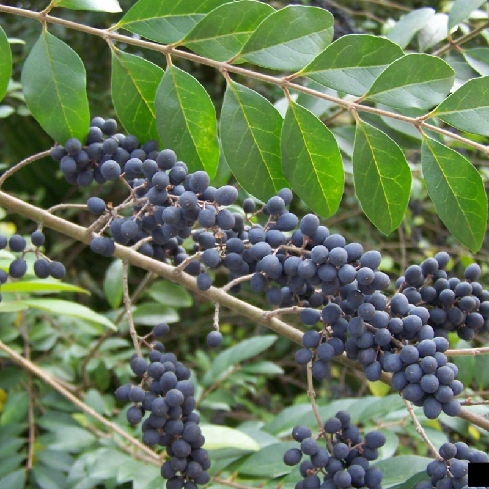
Pull it
Chinese Privet
Ligustrum sinense
Dark blue-black berries in bunches. This is the biggest bully plant in the woods — when you spot it, tell a grown-up!
🍂 Fall: berry bunches everywhere. Still green when winter comes, too.
Grown-up notes
The #1 woodland invader in Oklahoma. A semi-evergreen shrub with small oval leaves in opposite pairs; it loves creek bottoms exactly like this one. Field shortcut: if a shrub down here is still fully green in December, it's probably privet. This is the one to focus on if you only hunt one species.
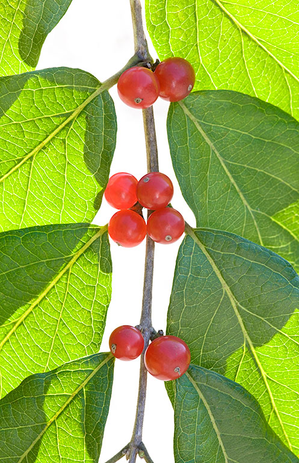
Pull it
Amur Bush Honeysuckle
Lonicera maackii
Red berries in pairs, two by two. Another bully — it makes too much shade for the little plants underneath.
🍂 Fall: paired glossy red berries — and it's still green after the native shrubs drop their leaves.
Grown-up notes
Big arching shrub with hollow stems. It leafs out earlier in spring and holds its leaves later in fall than any native shrub, shading out everything beneath it. That late-season green is the easiest tell this month.
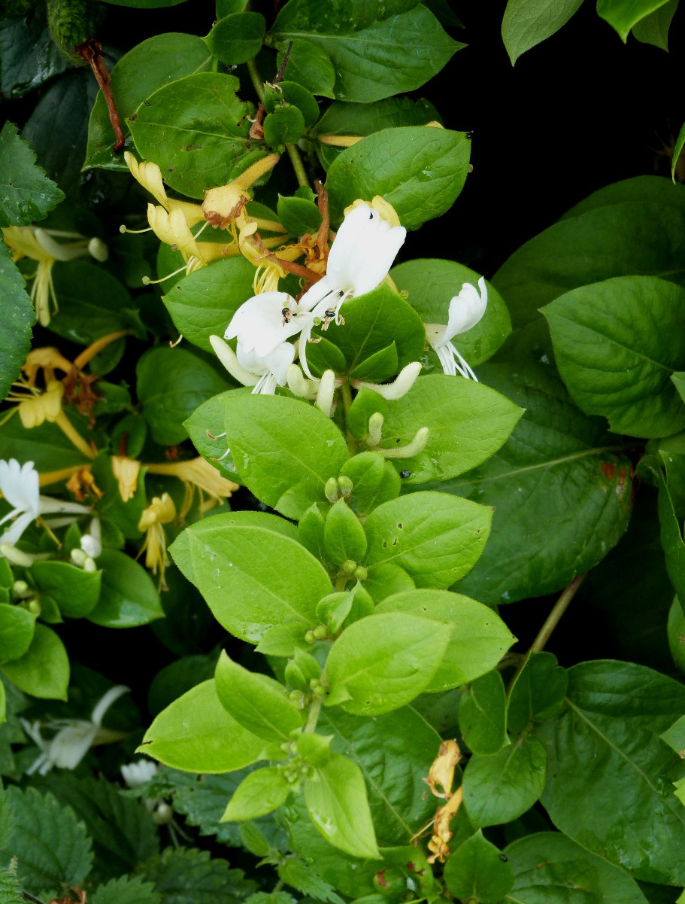
Pull it
Japanese Honeysuckle
Lonicera japonica
A climbing vine that hugs trees too tight and creeps along the ground. Snip it, vine!
🍂 Fall: black berries. Winter: its leaves stay half-green when the woods are brown.
Grown-up notes
The vine version of the honeysuckle problem — it twines up saplings and carpets the ground. White-to-yellow tubular flowers in summer. Semi-evergreen, so winter is when it stands out against the bare woods.
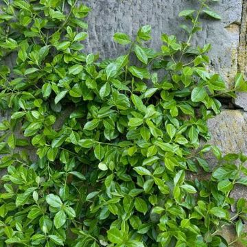
Pull it
Wintercreeper
Euonymus fortunei
A shiny green carpet on the ground that climbs up trees. It sneaked out of somebody's garden!
🍂 Fall & winter: stays glossy green while everything around it sleeps.
Grown-up notes
Evergreen groundcover mat that also climbs trunks with little rootlets. It escapes from yard plantings, so check the woods' edges nearest the houses first.
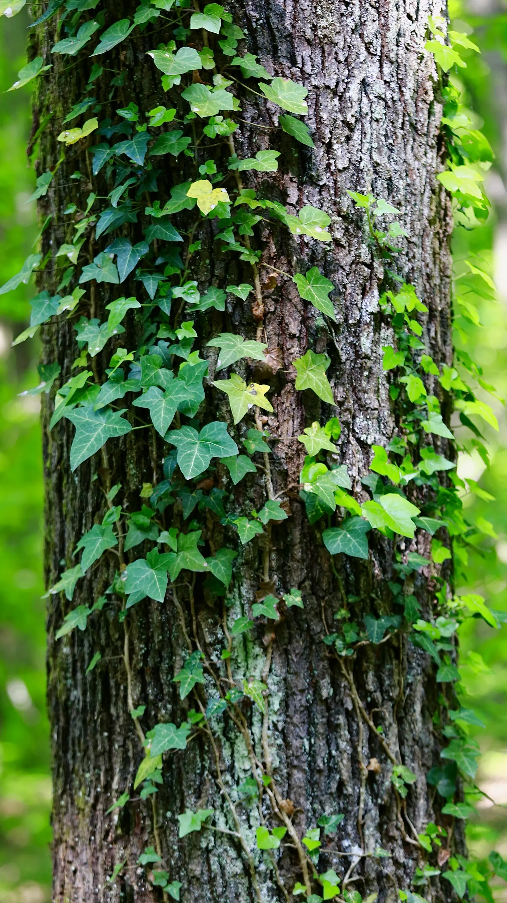
Pull it
English Ivy
Hedera helix
Leaves with three pointy parts, climbing up, up, up the trees. Too heavy, ivy!
🍂 Fall & winter: evergreen — easy to spot on bare trunks.
Grown-up notes
Same playbook as wintercreeper: an evergreen mat that climbs trunks and eventually kills trees by weight and shading. The three-lobed leaves are unmistakable. Grown-up trick: cut a vine at waist height and the whole top dies on its own — no climbing required.
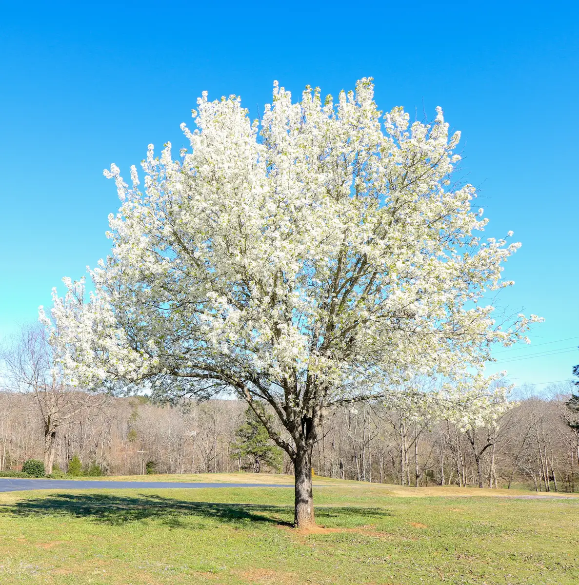
Pull it
Callery Pear
Pyrus calleryana
In spring this tree wears ALL the white flowers, before anyone else. Pretty — but it's a bully tree.
🍂 Fall: tiny hard pears, no bigger than marbles, and thorny twigs.
Grown-up notes
The wild offspring of Bradford pear. An edge species rather than a deep-woods one — look along the power-line cut and open edges. Spring giveaway: a small tree exploding in white blossom before anything else blooms.
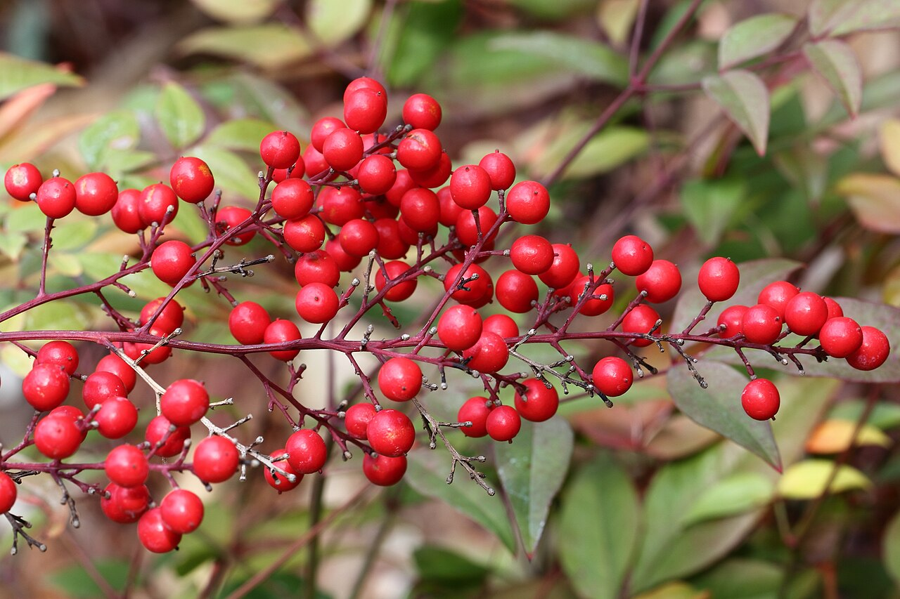
Pull it — and don't eat
Nandina (Heavenly Bamboo)
Nandina domestica
Pretty red berries on a lacy bush. But these berries are POISON. We look — we never, ever eat them.
🍂 Fall & winter: bright red berry clusters stand out for months.
Grown-up notes
A common yard shrub at the edge of these woods whose berries are toxic — cyanogenic glycosides — to kids, pets and birds in quantity; cedar waxwing deaths are documented. Pull any seedlings that appear along the trail corridor: bird-carried seed is exactly how it gets into woods like these.
🍄 Mushrooms
Wonderful to find, wonderful to photograph — never food. See the rule below.
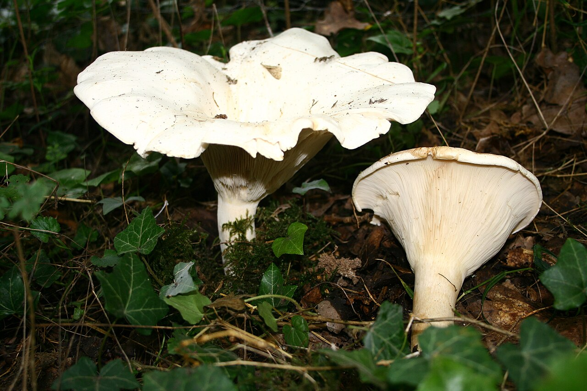
Giant Funnel
Leucopaxillus giganteus (Aspropaxillus giganteus)
A GIANT white mushroom, big as a dinner plate, hiding in the oak leaves! One was found right here. Look with your eyes — not your mouth.
🍂 Fall: pops up in oak leaf litter after rain soaks the leaves.
Grown-up notes
Confirmed in these woods in November 2026. Very large white cap (4–6 in. and up), crowded gills that run a short way down the stem, and a base knitted into the litter by a cottony white mat — it eats the oak-leaf layer itself. The snap test separated it from its brittle white Russula double: funnel flesh is fibrous and tears; Russula snaps like chalk. It's reported to give some people stomach trouble — a look-don't-eat mushroom here.
🍄 The mushroom rule: look, don't taste.
Every mushroom in the woods is for looking at. Nobody — big or small — eats a wild mushroom from this yard or these woods.
Grown-up notes
Some local mushrooms are genuinely dangerous, including deadly ones that grow in oak litter here (the destroying angel group). A few harmless and harmful species look nearly identical. The rule for these woods is simple and total: wild mushrooms are for recognition, not for eating.
🐾 Animal Signs
The woods are full of neighbours we mostly hear, or find signs of. Detectives look for clues!
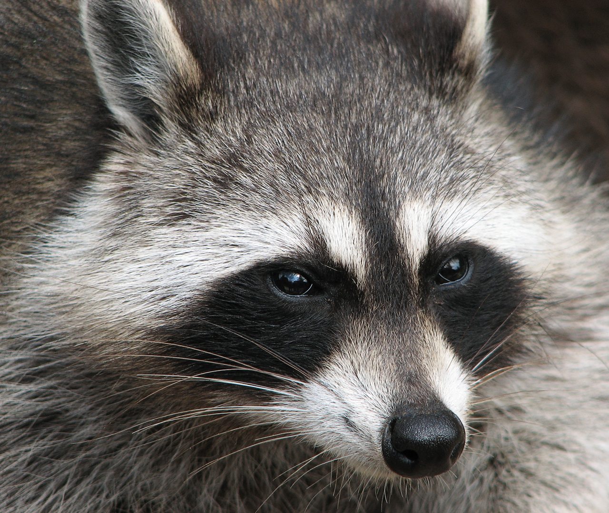
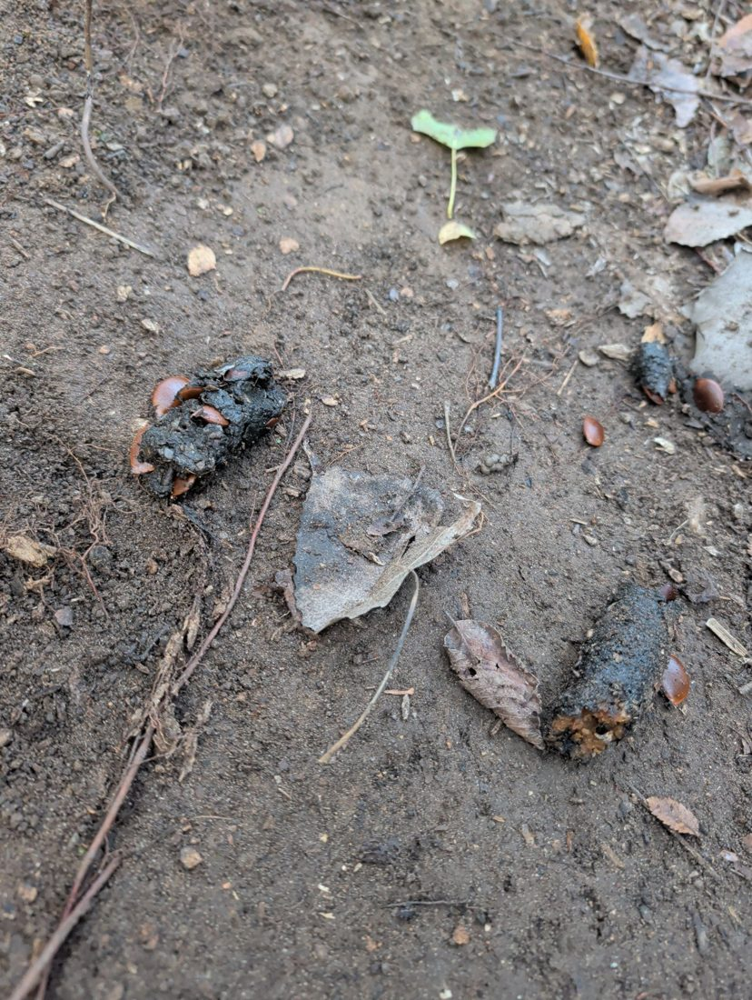
Raccoon
Procyon lotor
A night-time visitor with a robber mask! Its clue: poop full of big flat seeds — that means somebody had a persimmon feast.
🍂 Fall: seed-filled scat appears when the persimmons ripen.
Grown-up notes
The second photo is the actual clue found on the trail here in November 2026: formed, blunt segments nearly an inch across, packed with persimmon seeds. Coyote was ruled out (their scat is ropey with fur; a fruit-binged coyote makes a sloppy pile), as was dog (the seed load, and no human activity back here). Repeated deposits in one spot make a latrine, which marks a route or feeding spot, not a den — the approach here is to shift a trail a few feet around a latrine rather than through it. Hygiene: raccoon scat can carry raccoon roundworm (Baylisascaris) eggs that persist in soil — look, don't touch, and wash hands after trail work near it. Best estimate for this corridor: roughly 6–10 raccoons use it regularly.
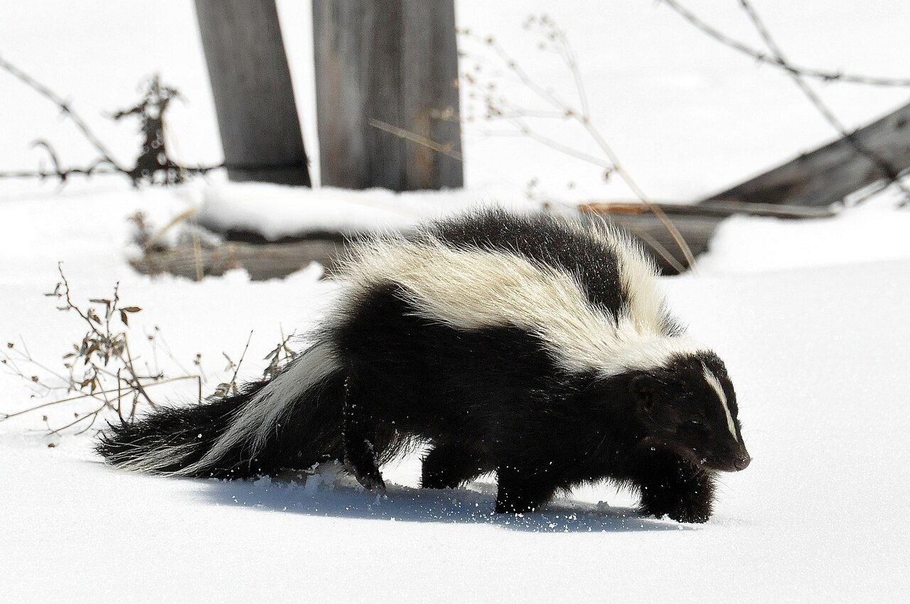
Striped Skunk
Mephitis mephitis
Black with a white stripe — and a super-smelly spray! If you meet one, stop… and walk away slow and quiet.
🍂 Fall: most active at dusk and dawn, digging for grubs.
Grown-up notes
One has been seen in these woods. Skunks spray reluctantly — the glands take about a week to reload — and they warn first: foot-stomping, hissing, tail up and rear turned toward you. Be audible on the trail at dusk so you never surprise one, and always leave it an escape route. A skunk out in daylight acting disoriented is a rabies caution: keep well away.
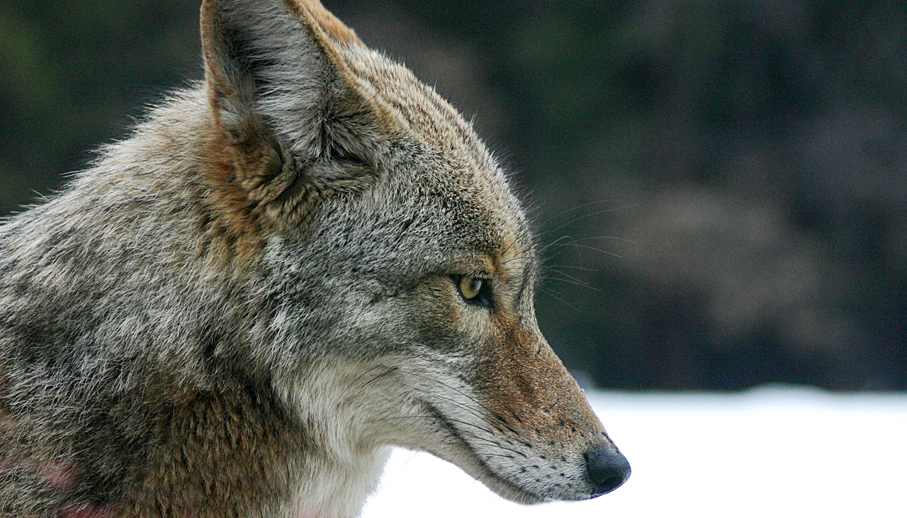
Coyote
Canis latrans
We HEAR these neighbours! At night the whole family sings — and five coyotes can sound like twenty!
🍂 Fall: family groups are noisy as young coyotes practice their songs.
Grown-up notes
Coyotes are heard often around this corridor. Almost certainly one family pack of about 4–6 — a suburban pack's territory runs 2–5 square miles, so these woods are a small corner of it. They rarely catch raccoons anywhere near climbable trees and a creek, which is one reason the raccoon population does fine alongside them.
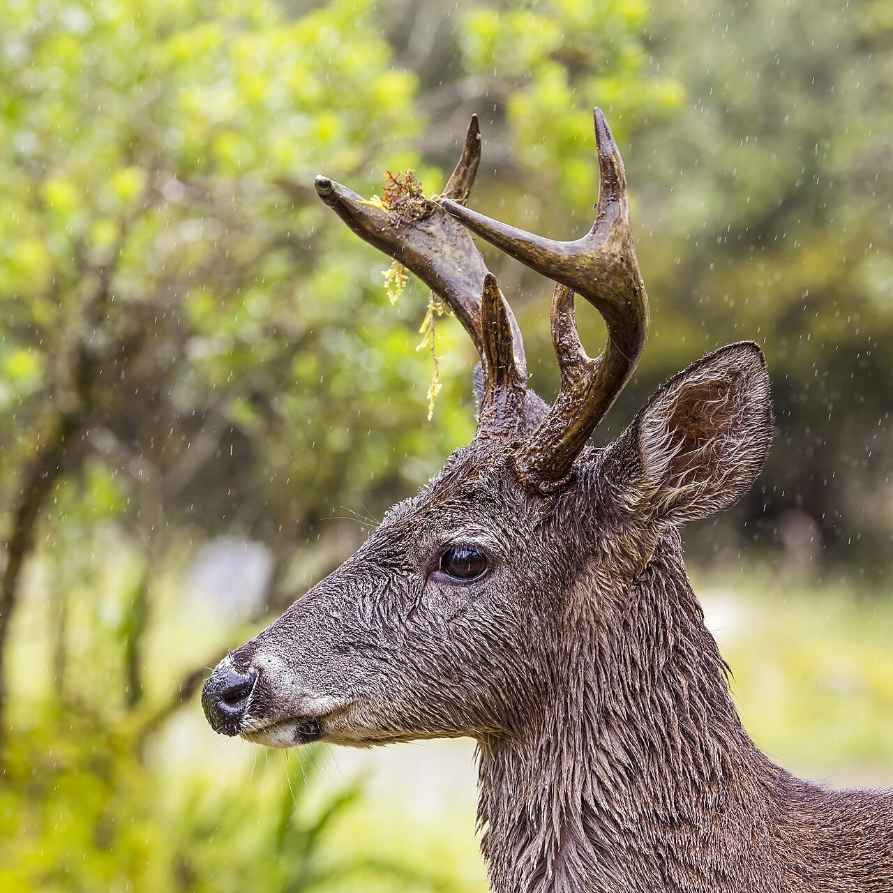
White-tailed Deer
Odocoileus virginianus
Look in the soft creek mud for tracks — two pointy toes, like a tiny heart split in half!
🍂 Fall: bucks carry hard, shiny antlers, and deer move most at dawn and dusk.
Grown-up notes
Deer are regulars in creek corridors like this one — look for the cloven, heart-shaped tracks in bank mud, oval droppings, and low browse lines on shrubs. A bobcat also likely hunts this corridor from time to time; its round, clawless tracks in creek mud would be the sign to watch for.
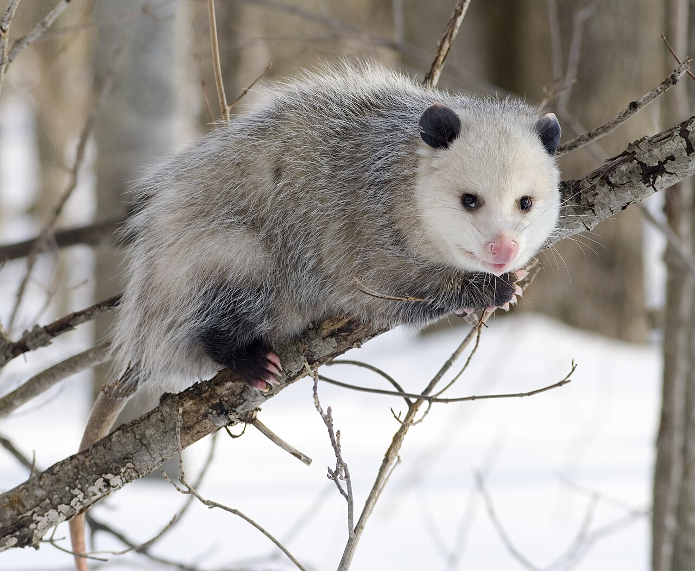
Virginia Opossum
Didelphis virginiana
A slow night-walker with a pink nose and a long tail. When it gets scared, it plays sleeping. What a trick!
🍂 Fall: out at night, snuffling through the leaf litter for snacks.
Grown-up notes
Gentle, slow and nearly harmless — and useful: opossums eat large numbers of ticks. "Playing possum" is an involuntary faint, not a performance. If you find one apparently lifeless, leave it alone; it will likely wake and wander off.
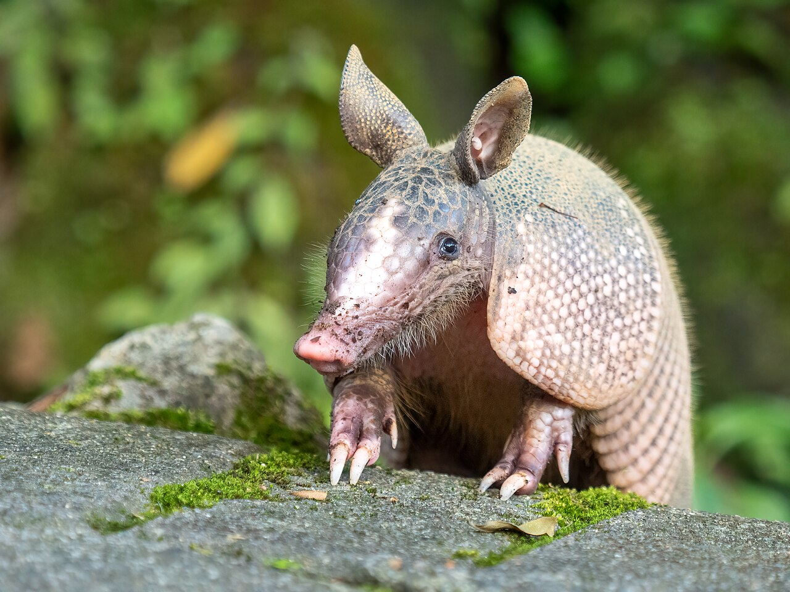
Nine-banded Armadillo
Dasypus novemcinctus
A little animal wearing armour, like a tiny knight! Look for its dug-up holes in the dirt.
🍂 Fall: rooting and digging in soft soil for bugs and grubs.
Grown-up notes
Armadillos announce themselves with conical dig holes and rooted-up litter rather than sightings. Poor eyesight, excellent nose. They can jump straight up when startled — a surprise for the armadillo and everyone else.
🥾 Trail Rules
How we take care of the woods — and how the woods take care of everything living in them.
1. Stay on the trails
We walk on our paths, and the animals get the other 99% of the woods all to themselves.
2. Leave logs and sticks where they lie
Fallen logs and standing dead trees are houses — for bugs, birds, rabbits and skunks. We walk around them.
3. Clues are for eyes, not hands
Animal signs like scat: look, take a picture, leave them be — and wash hands when the walk is over.
4. Look, don't taste
No eating mushrooms or berries in the woods. Ever. Some of them can make people very sick.
5. Trash goes out with us
If the wind blew litter into the woods, we carry it out. The woods stay clean because we clean them.
6. Brush piles are animal houses
When grown-ups trim the trail, the sticks get stacked in piles off the path — instant shelter for rabbits, wrens and skunks.